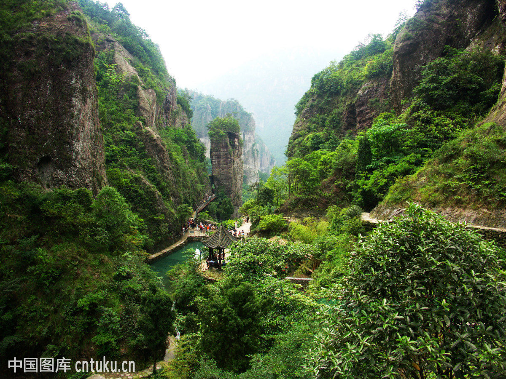

瓯越文化-温州
雁荡山
雁荡山，首批国家重点风景名胜区，国家级“卫生山、安全山、文明山”、国家文明风景名胜区、国家AAAAA级旅游区、全国文明风景旅游区示范点、“世界地质公园”等称号。位于中国浙江省乐清市境内，部分位于永嘉县及温岭市。因主峰雁湖岗上有着结满芦苇的湖荡，年年南飞的秋雁栖宿于此，因而得名“雁荡山”。
雁荡山主要有灵峰、灵岩、大龙湫、三折瀑、雁湖、显胜门、羊角洞、仙桥八大景区，有500多处景点。素以独特的奇峰怪石、飞瀑流泉、古洞畸穴、雄嶂胜门和凝翠碧潭扬名海内外，被誉为“海上名山，寰中绝胜”，史称“东南第一山”。其中，灵峰、灵岩、大龙湫三个景区被称为“雁荡三绝”。雁荡山的灵峰夜景，灵岩飞渡是其两大特别景观。因山顶有湖，芦苇茂密，结草为荡，南归秋雁多宿于此，故名雁荡。
雁荡山大尺度的奇特景观形象，给诗人、画家、文人学士以强烈的美感和灵感。于此赋诗作画，留下大批作品，其中诗词5000多首，以及龙鼻洞等400多处摩崖石刻，还有南阁牌坊等历史
古迹。清人施元孚游寝雁荡山十年后提出“游山说”，说的是中国古代游览山水活动中回归自然，与大自然精神往来的精神文化活动的经验总结，这与清末学者魏源提出的“游山学”是一致的。 [6]

永嘉学派
永嘉事功学派，又称“事功学派”、“功利学派”等，是南宋时期在浙东永嘉（今温州）地区形成的、提倡事功之学的一个儒家学派，是南宋浙东学派中的一个先导学派。因其代表人物多为浙江永嘉（现代温州地区）人，故名。 于北宋庆历年间王开祖、丁昌期等人开创学术思想，到南宋，郑伯熊、薛季宣、陈傅良等形成学派，叶适则集前辈学术理念之大成。在哲学思想上，认为充盈宇宙者是“物”，而道存在于事物本身（物之所在，道则在焉）；提倡功利之学，反对虚谈性命。永嘉学派曾与理学派、心学派鼎足而立。 永嘉学派提出“事功”思想，主张“经世致用，义利并举”，重视经史和政治制度的研究，主张通商惠工、减轻捐税、探求振兴南宋的途径。正如明清之际的学者黄宗羲所指出的“永嘉之学，教人就事上理会，步步着实，言之必使可行。足以开物成务，盖亦鉴一种闭眉合目朦胧精神自附道学者，于古今事物之变，不知以为何等也”（《宋元学案》51卷《水心学案》）。永嘉学派与陈亮的永康学派、吕祖谦的金华学派，统称为南宋浙东学派。
江心屿

江心屿，位于温州市区北面瓯江中游，呈东西长、南北狭的形状，属于中国四大名屿。该屿风景秀丽，东西双塔凌空，映衬江心寺，历来被称为“瓯江蓬莱”。历代著名诗人谢灵运、孟浩然、韩愈、陆游、文天祥等都曾相继留迹江心屿。 [1] 千百年来文人留有叹咏江心屿著名诗章近800篇。屿中名胜古迹众多，如宋文信国公祠、浩然楼、谢公亭、澄鲜阁及博物馆、革命烈士纪念馆、工人疗养院均系省市级文保建筑。现建有儿童乐园、游乐场、情人岛、盆景园、拓展园、戛纳名人摄影公馆、共青湖等。
炒粉干 细细的粉干配上香菇、鸡蛋、墨鱼条等五花八门的配料热油爆炒，味道真是爆炸好！ 瘦肉丸 瘦肉丸是一道老少皆宜的名点，细长的肉羹划入滚烫的水中，立即浮上来，洁白而微粉，味道鲜美，Q弹有嚼劲，汤汁澄清鲜美，略带酸辣味。放入紫菜、榨菜丝、虾皮、葱花、香菜粒，鲜香俱全、美味可口。 鸭舌 温州鸭舌，温州人称鸭舌为“鸭赚”，属于凉菜，鸭舌是卤的，风至半干，在口中细嚼，韧性十足，饱满有嚼劲。